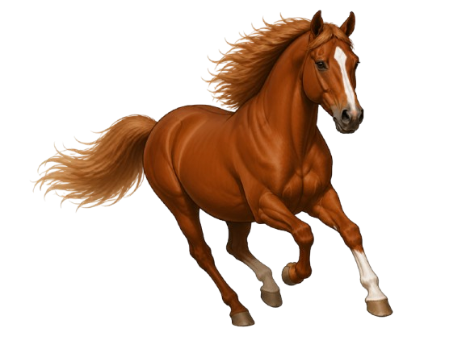
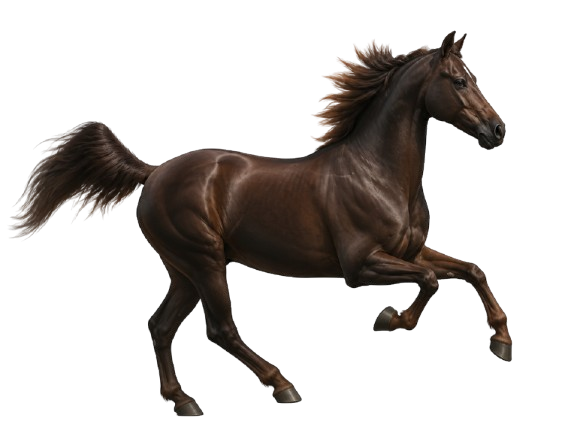
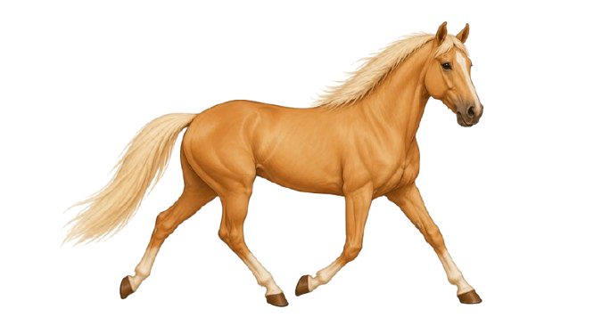
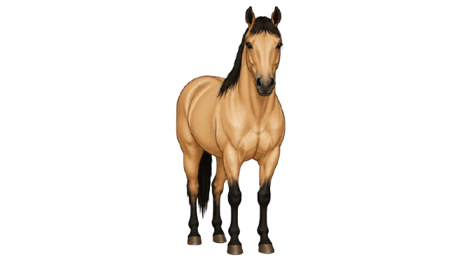
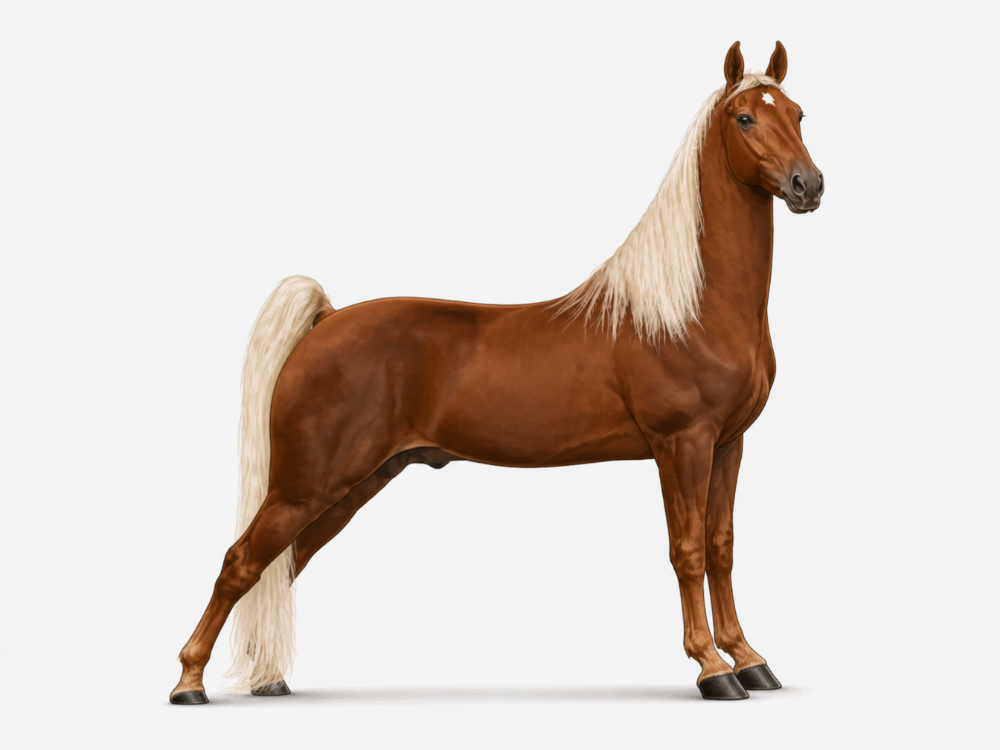
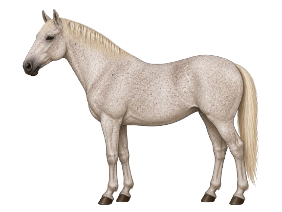
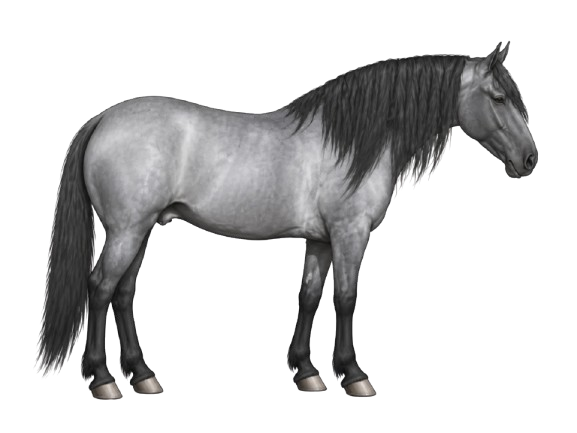
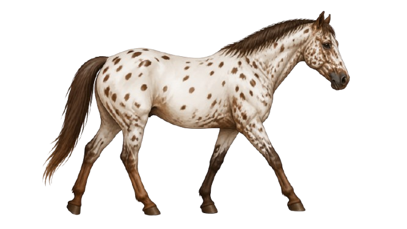
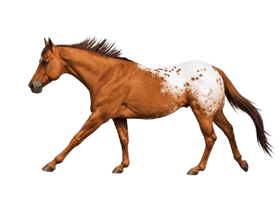

Red Pigment
Red PigmentChestnut
A warm reddish-brown body coat with a mane and tail that are the same shade or lighter - never black. One of the most common horse colors in the world.
Explore the full range of common horse coat colors - from the core genetic base colors to golden dilutes, gray, roan, and patterned coats. Use the tabs to work through each group.
This lesson brings together all the common horse coat colors in one organized place. The five tabs reflect the natural groupings of colors by their genetic origin - which is also the most logical way to study them. Start with Base Coat Colors and work through each tab, or jump directly to the group you want to review.
Chestnut, bay, and black are the three genetic base colors. Every other color you'll encounter is a modification of one of these - through dilution, patterning, or progressive change. If you learn these first, everything else becomes easier to identify.
These colors are produced by red pigment only. The mane, tail, and legs never contain black hairs.
Red PigmentA warm reddish-brown body coat with a mane and tail that are the same shade or lighter - never black. One of the most common horse colors in the world.

Red PigmentA lighter, brighter copper-red coat with a flaxen or matching mane and tail. Common in stock breeds. Often used interchangeably with chestnut, though sorrel typically refers to a lighter, more golden-red tone.

Red PigmentA very dark, deep reddish-brown coat - almost chocolatey in appearance. The mane and tail remain within the same dark brown family, without any black. The darkest variation of chestnut.
These colors involve black pigment - either alone or combined with red. The presence of true black points is the key identifying feature.
 Black Pigment
Black PigmentA solid black body coat, black mane, black tail, and black legs with no reddish or brown tones. True black horses are less common than they appear - many horses described as black are actually very dark bay.
 Red + Black Pigment
Red + Black PigmentA reddish-brown body coat with a black mane, tail, and lower legs - called black points. The body can range from light tan to dark reddish-brown, but the black points are always present and are the defining feature of bay.
These colors are produced when dilute genes lighten a chestnut or bay base. The most important dilute gene here is the cream gene, which lightens red pigment to gold - while leaving black pigment mostly unchanged. This is why palomino and buckskin look so similar but differ in the mane and legs.
The cream gene lightens red pigment to gold - but leaves black pigment mostly unchanged. This is why palomino (chestnut + cream) has a golden body with a white mane, while buckskin (bay + cream) has a golden body but keeps its black mane, tail, and legs.
Both palomino and buckskin result from one copy of the cream gene - but they start from different base colors.

Chestnut + Cream GeneA golden body coat - ranging from pale cream-gold to rich honey gold - with a white or very light mane and tail. Produced when one cream gene acts on a chestnut base. The skin is typically pale and the eyes are dark.

Bay + Cream GeneA golden or tan body coat with a black mane, tail, and lower legs (black points). Produced when one cream gene acts on a bay base. The black points are the key feature that separates buckskin from palomino.
These involve a different genetic mechanism than the cream gene - and are easy to confuse with other colors if you don't know the key feature to look for.
 Dun Gene
Dun GeneA diluted body coat - tan, sandy gold, or mouse-grey depending on the base color - with a distinctive dorsal stripe (a dark line running from mane to tail along the spine). May also show leg barring (zebra stripes on legs). The dorsal stripe is the defining feature of dun.

Flaxen ModifierA chestnut horse with a noticeably lighter - flaxen, cream, or white - mane and tail while the body coat stays chestnut. Flaxen is not a separate color but a modifier that affects only mane and tail pigment on chestnut horses.
Gray is one of the most unique and misunderstood horse colors - because it is not really a stable color at all. Gray is a process of progressive depigmentation that changes the coat throughout a horse's entire life. The same horse can look completely different at 2 years old versus 15 years old.
Gray horses are often mistaken for white horses - but a true white horse is born white and stays white throughout its life. A gray horse is born with color and lightens over time. The easiest way to tell them apart: look at the skin. Gray horses typically have dark (black or grey) skin, while true white horses have pink skin.
The graying process typically follows a predictable pattern - though the pace varies between individuals.
Born with their base color - may appear black, bay, or chestnut. Gray hairs begin appearing around the eyes and muzzle first.
Distinctive dapples - rings of lighter and darker grey - often appear across the body as depigmentation progresses unevenly.
The coat continues lightening until predominantly grey or nearly white. May develop flea-bitten speckling in later years.
 Depigmentation
DepigmentationThe general term for a horse with the gray gene. The coat shows a mix of white and colored hairs, producing an overall grey appearance. Can range from dark steel grey to near-white depending on age.
 Intermediate Stage
Intermediate StageA gray horse in the dappling stage - showing circular patterns of lighter grey surrounded by slightly darker grey across the body, particularly over the hindquarters and back. Dapples typically disappear as the horse continues to lighten.

Later StageA predominantly white or light grey coat flecked with small specks or clusters of pigmented hairs - usually chestnut, bay, or grey. These "flea bites" commonly appear in older gray horses after the coat has lightened nearly completely.
A roan horse has a mixture of white (unpigmented) hairs evenly distributed throughout its base-colored body coat. Unlike gray horses, roan horses do not progressively lighten with age - the coat stays relatively consistent throughout life. The base color beneath the roan pattern determines which type of roan the horse is.
Both roan and gray horses have white hairs mixed into a colored coat - but they behave very differently. A roan horse does not change significantly over time and has a solid-colored head. A gray horse progressively lightens with age and the white hairs spread across the entire body including the head.
The name of a roan is determined by its base color - the color beneath the white hair mixing.
 Chestnut Base
Chestnut BaseA chestnut or sorrel base coat with white hairs mixed evenly throughout, creating a pinkish-red or strawberry appearance. The head, mane, tail, and lower legs remain the chestnut base color without white mixing.

Black BaseA black base coat mixed with white hairs, producing a cool blue-grey body appearance. The head, mane, tail, and legs stay black. The name describes the bluish-grey effect of black and white hairs mixed together.
Individual white hairs are evenly distributed through the body coat - not in patches, but mixed consistently throughout the entire body.
The head, mane, tail, and lower legs typically remain the base color without white mixing - the clearest feature separating roan from gray.
Unlike gray horses, roans do not progressively lighten. The coat stays relatively consistent in color throughout the horse's life.
A bay base with roan mixing - reddish-brown body with white hair mixing and retained black points (mane, tail, lower legs). Follows the same pattern as other roans.
Pinto and Appaloosa are patterns layered on top of a base color - not separate colors on their own. Each is produced by a completely different genetic mechanism, and each has its own distinct visual characteristics and subtypes.
Pinto is a pattern of large, irregular white patches over a base-colored coat. The two main pinto patterns - tobiano and overo - look different and are produced by different genes.
 Pinto Pattern
Pinto PatternWhite patches cross the topline (back and hindquarters) and the legs are often white. The head is usually the base color or has normal face markings. White patches tend to have smooth, rounded edges. The most common pinto pattern.
 Pinto Pattern
Pinto PatternWhite patches spread horizontally from the belly upward and rarely cross the topline. The legs are often darker. The face frequently shows bold white markings. White patches have irregular, jagged edges and an overall "splashy" appearance.
Appaloosa spotting patterns are produced by the leopard complex (LP) gene. All Appaloosa horses share three identifying characteristics beyond the coat: mottled skin, visible white sclera, and striped hooves.

Appaloosa PatternA mostly white body coat covered in dark spots of various sizes - similar in appearance to a leopard's coat. Spots are usually dark and rounded. The most visually striking Appaloosa pattern.

Appaloosa PatternA solid-colored body with a distinct white patch (blanket) over the hindquarters. The blanket may contain dark spots within it (spotted blanket) or be solid white (white blanket). The most common Appaloosa pattern.